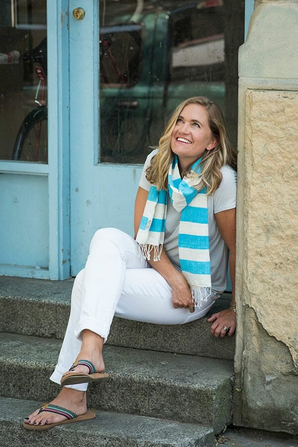

About Christiana
Taking out the intimidation that seems to surround photography.
Photography has taught me many lessons; how to slow down, how to savor, how to remember, how to connect, how to see beauty in the ordinary and even has helped heal me in times of grief. I would have never guessed that all these lessons would be revealed to me through this little piece of glass, buttons and dials. I have also been frustrated to the point of near destruction of the same device as I struggled to understand why some images worked and others, not so much. Because I understand how intimating and potentially frustrating this process is, I’m endlessly patient in teaching those that want to learn how to get the most out of their cameras.